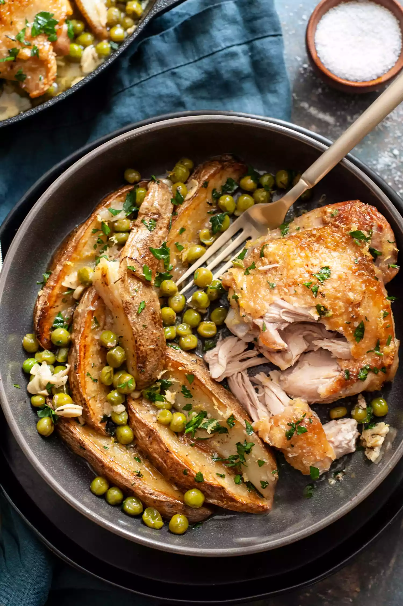

Chicken Vesuvio

Ingredients
- 1 tablespoon olive oil
- 4 skin-on bone-in chicken thighs, excess fat and skin trimmed (about 1 3/4 pounds)
- 2 teaspoons kosher salt, divided
- 1/2 teaspoon freshly ground black pepper, plus more for seasoning the potatoes
- 2 large russet potatoes, skin on, cut into 1/2-to-3/4-inch wedges
- 1 tablespoon unsalted butter
- Cloves from 1 head garlic, peeled and thinly sliced
- 1 teaspoon dried oregano or Italian seasoning
- 3/4 cup dry white wine
- 3/4 cup frozen peas (not defrosted)
- 1 tablespoon olive oil
- Finely grated zest of 1 lemon (about 1/2 teaspoon)
- 1 tablespoon lemon juice
- About 1/4 cup chopped fresh flat-leaf parsley leaves
Wondering how to make it? Here's how.
- Put the oven rack in the middle and preheat the oven to 400°F.
- Season the chicken:
- Sprinkle the chicken with 1 1/2 teaspoons of the salt and 1/2 teaspoon pepper.
- Cook the chicken:
- Heat a 12-inch cast-iron pan gradually over medium-low heat until it’s good and hot, about 10 minutes.
- (This may seem like a long time, but the pan is over medium-low during this time, and the payoff is nice and crispy golden-brown skin.)
- Then turn the heat up to medium-high and add the oil.
- Place the chicken in the pan, skin-side down.
- Cook without moving until the skin develops a nice brown crust, 8-10 minutes.
- Remove to a plate. The chicken isn’t cooked through yet, so don’t worry. It goes in the oven with the potatoes later on.
- Cook the potato wedges:
- Add the potato wedges and sprinkle with remaining 1/2 teaspoon salt and a pinch of pepper.
- Stir to coat with and arrange in the skillet flat side down. Cook until they turn light to golden brown.
- Make the sauce:
- Turn the heat to medium-low and add the butter, garlic, and dried oregano or Italian seasoning.
- Stir the sauce until the garlic is fragrant but doesn’t turn brown, about 30 seconds.
- Add the wine and frozen peas and bring to a simmer, about 20 seconds.
- Add potatoes and chicken into the sauce:
- Turn off the heat, return the potatoes to the pan, and turn to coat in the sauce.
- Then arrange the chicken on top, skin-side up, and drizzle any juices left behind on the plate around the potatoes.
- Bake the chicken and potatoes:
- Place the pan in the oven and bake until the potatoes and chicken are cooked through.
- Chicken should have an internal temperature of 180 to 185°F.
- Do this for 30-35 minutes, depending on the size of the thighs.
- The chicken will deepen in color and the potatoes will be tender.
- Finish and serve!
Back to the Top
Back to Homepage